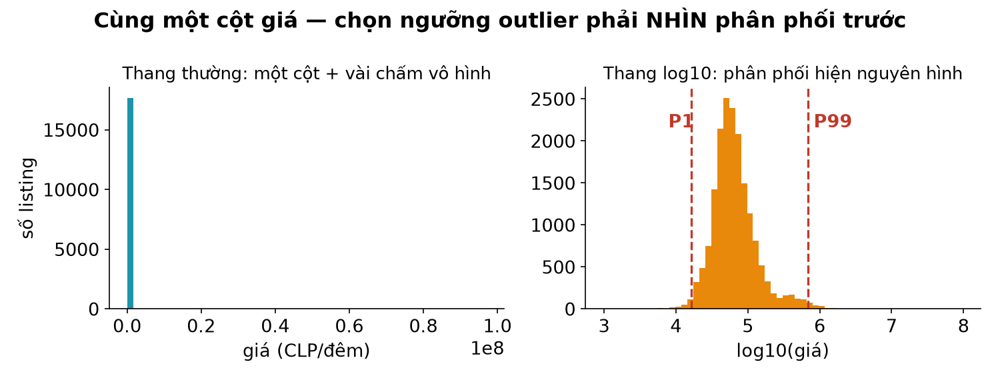

Giảng viên: Nguyễn Tuấn Phong
Trợ giảng: {{cập nhật sau}}
Học kì: 1, năm học 2026–2027
Viện Trí tuệ nhân tạo, Trường ĐH Công nghệ, ĐHQGHN
Thiếu · lệch · thừa — và bộ quy tắc QA chạy lại được.
Dữ liệu bẩn không phải tai nạn — nó là trạng thái mặc định.
| Họ lỗi | Ở Santiago hôm nay | Vũ khí |
|---|---|---|
| Thiếu — ô trống | 17,8% listing không có điểm review | isna, dropna, fillna có cờ |
| Lệch — sai miền, outlier | phòng đòi ở tối thiểu 999 đêm; giá 97 triệu CLP | ràng buộc miền, IQR/percentile |
| Thừa — trùng lặp | id lặp giữa các snapshot | duplicated, khoá chính |
Một quy tắc QA tử tế có đủ bốn phần:
Viết được thành bảng như vậy thì code được, chạy lại được, và bảo vệ được khi vấn đáp.
Ô trống cũng biết nói — nếu bạn chịu hỏi nó.
(df.isna().mean() * 100).round(1).sort_values(ascending=False).head(3)
review_scores_rating 17.8
bedrooms 12.6
price_num 4.6
Ba cột, ba câu chuyện thiếu khác nhau — và ba cách xử khác nhau.
kpi_gia = df.dropna(subset=["price_num"])
len(df) - len(kpi_gia)
846
Bỏ 846 dòng (4,6%) khỏi các KPI về giá — chấp nhận được nếu: (1) ghi rõ trong báo cáo, (2) kiểm tra nhóm bị bỏ không lệch hẳn về một quận/loại phòng.
df["bedrooms"].median() # 1.0
df["bedrooms"].fillna(df["bedrooms"].median()).mean().round(2)
df["bedrooms_isna"] = df["bedrooms"].isna() # cờ TRƯỚC
df["bedrooms"] = df["bedrooms"].fillna(
df.groupby("room_type")["bedrooms"].transform("median"))
Giá 97 triệu CLP/đêm: lỗi nhập, hay biệt thự thật?
rules = {
"gia_thieu_hoac_0": (df["price_num"] <= 0) | df["price_num"].isna(),
"dem_toi_thieu_999": df["minimum_nights"] > 365,
"toa_do_ngoai_bien": ~df["latitude"].between(-34, -33),
}
{k: int(v.sum()) for k, v in rules.items()}
{'gia_thieu_hoac_0': 846,
'dem_toi_thieu_999': 1,
'toa_do_ngoai_bien': 0}
Sai miền = vi phạm điều không thể đúng (giá âm, toạ độ ngoài thành phố). Không cần thống kê — cần hiểu biết về dữ liệu.

q1, q3 = gia.quantile([0.25, 0.75])
fence = q3 + 1.5 * (q3 - q1)
fence, (gia > fence).mean().round(3)
(164784.0, 0.085)
Luật "1.5×IQR" gắn cờ 8,5% thị trường — với phân phối giá lệch phải, thế là vơ cả phân khúc cao cấp vào rọ. Thay thế: IQR trên log(giá), hoặc ngưỡng percentile (P99: chỉ 177 phòng ≈ 1%).
df.nlargest(1, "price_num")[["name", "minimum_nights",
"review_scores_rating", "price_num"]]
name minimum_nights review_scores price_num
4485 Apartasuites EL CALEÑO 1 3.2 97000045.0
"Apartasuites" 97 triệu CLP/đêm (~2,6 tỷ đồng), điểm 3,2 — gần chắc là lỗi nhập giá. Nhưng ta không xoá: gắn cờ flag_gia_p99, ghi lý do, loại khỏi KPI giá.
| Tình huống | Hành động hợp lý |
|---|---|
| Vi phạm miền (giá ≤ 0, toạ độ lạc) | cờ + loại khỏi mọi KPI liên quan |
| Cực trị đáng ngờ (P99, lệch 20× trung vị quận) | cờ + soi tay vài ca + loại khỏi KPI nhạy cảm (mean) |
| Cực trị có thật (biệt thự xịn) | giữ; KPI dùng median/percentile thay mean |
Hàng 3 là lý do median xuất hiện dày đặc từ buổi 4 đến giờ.
Một bản ghi xuất hiện hai lần = mọi phép đếm sai một nửa… kiểu gì đó.
df.duplicated().sum() # dòng giống hệt nhau
df["id"].duplicated().sum() # khoá chính lặp
0
Santiago 06/2026 sạch trùng lặp trong một snapshot — nhưng đừng vội mừng: kiểm khoá chính là nghi thức bắt buộc với mọi bảng mới, nhất là sau merge/concat.
ca_hai = pd.concat([t9, t6])
ca_hai["id"].duplicated().sum()
12429
Từ những lệnh rời rạc → một sản phẩm chạy lại được.
def qa_rules(df):
"""Trả về dict: tên quy tắc -> mặt nạ dòng vi phạm."""
gia = df["price_num"]
return {
"gia_thieu": gia.isna(),
"gia_p99": gia > gia.quantile(0.99),
"dem_999": df["minimum_nights"] > 365,
"id_trung": df["id"].duplicated(keep=False),
}
Hàm nhận DataFrame, trả các mặt nạ — không sửa gì cả. Tách "phát hiện" khỏi "xử lý": phát hiện là khoa học, xử lý là quyết định.
report = pd.DataFrame([
{"quy_tac": ten, "so_dong": int(m.sum()),
"ty_le": round(m.mean() * 100, 2)}
for ten, m in qa_rules(df).items()
])
report
quy_tac so_dong ty_le
0 gia_thieu 846 4.56
1 gia_p99 177 0.95
2 dem_999 1 0.01
3 id_trung 0 0.00
Bảng này đi thẳng vào reports/qa_report.csv của BTL — và vào báo cáo cuối: "QA của nhóm bắt được gì, ảnh hưởng bao nhiêu".
| KPI giá (CLP/đêm) | Trước QA | Sau QA (bỏ dòng bị cờ) |
|---|---|---|
| mean | 118.200 | 82.300 |
| median | 59.000 | 58.400 |
host_since trống 100% ở bản 06/2026?).dropna() toàn bảng "cho sạch"; áp IQR mù quáng lên phân phối lệch;
đề xuất quy tắc nghe hợp lý nhưng sai với thành phố của bạn (ngưỡng giá Paris
áp cho Santiago).